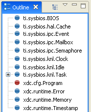
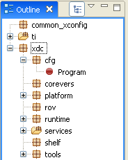

From RTSC-Pedia
 | [printable version] [offline version] | offline version generated on 02-Oct-2009 22:10 UTC |
XGCONF User's Guide
Using the RTSC Graphical Configuration Tool in CCSv4
This page provides instructions for creating and editing a RTSC configuration file within an Eclipse IDE such as CCStudio v4.
Contents |
You can also watch a demo that shows how to use XGCONF.
What is XGCONF?
XDCtools includes a configuration tool that runs in CCStudio v4 called XGCONF. You can use this tool to graphically create and view RTSC configuration scripts. Such configurations are written in the XDCscript language (a superset of JavaScript), but XGCONF displays them in a visual manner.
As you might imagine, XGCONF is useful because it gives you an easy way to view the end result of your configuration, without having to read configuration code. XDCscript lets you specify a "contract" for what you want to accomplish in your configuration; processing that configuration finds all the necessary pieces for realizing that goal. Because a number of modules and instances are activated behind-the-scenes during configuration processing, XGCONF is a useful tool for viewing the result of these internal operations.
See the RTSC+CCStudio v4 QuickStart to learn about creating projects that contain RTSC configuration files.
Opening a RTSC configuration with XGCONF
To open XGCONF, follow these steps:
- Make sure you are in the C/C++ perspective of CCStudio 4. If you are not in that perspective, click the C/C++ icon to switch back.
- Make the project that contains the RTSC configuration file (with a .cfg extension) the "Active" project. You can do this by right-clicking on the project in the "C/C++ Projects" view and selecting Set as Active Project.
- Double-click on the RTSC configuration file. It takes a few seconds for XGCONF to open. During this time, the CCStudio status bar shows that the configuration is being processed and validated.
If, after a few seconds, only the text editor has opened, right-click on the .cfg file and choose Open With > XGCONF from the pop-up menu.
About the XGCONF views
The XGCONF tool is made up of several panes:
- Available Packages view, which lets you add modules to your configuration. By default, this view appears in the lower-left corner of the window.
- Outline view, which shows modules used in your current configuration and lets you choose the module to display in the Properties view. By default, this view appears on the right side of the window.
- Editor, which has the following tabs:
- Properties tab, which shows the property settings of the selected module or instance in a name/value table, lets you make changes, and displays errors.
- Source tab, which shows the source configuration script, lets you make changes, and displays errors.
- Problems view, which lists errors and warnings detected in the configuration during validation.
The Available Packages view
The Available Packages view lists the RTSC packages available for use in your configuration. It also lets you add modules to your configuration. The list is organized according to functional categories. Modules that you are likely to use in your configuration script are listed in this tree. Modules that are used internally or are implicitly configured by other modules are hidden in this tree.
When you open a configuration with XGCONF, the package path defined in your CCStudio 4 project is scanned for packages and the results are listed here.
You can open online help about a module by right-clicking on the module and selecting Help from the pop-up menu.
The Outline view
The Outline view shows modules and instances that are available for configuration in your *.cfg file. You can view the Outline in two ways. To toggle between the two, click the icon.
- Explicit use mode. This view mode shows a flat list of only those modules directly referenced in the *.cfg file and instances created directly in the *.cfg file. You can use this view to add instances of modules and delete the use of a module use from the configuration.
- Implicit and explicit use mode. This view mode shows a tree view of all the modules and instances that are used both implicitly (behind the scenes) and explicitly (because they are referenced directly in the *.cfg file). This view is useful for understanding the interrelationships between modules that are handled automatically by RTSC. This view is read-only.
| Explicit Use | Implicit and Explicit Use |
|  |  |
Some modules have a red ball next to them, while others have a blue ball . The blue ball indicates that this is a target module, which provides code or data that can be referenced at runtime on the embedded target. The red ball indicates that this is a meta-only module, which exists in the configuration but does not directly exist on the target.
The Properties tab
If you select a module or instance in the Outline view, the Properties tab shows lists of properties for the selected item. You can use the Properties tab to modify the values of properties.
For some module and instance types, more than one tab is shown in the Properties view. For example, when you select a module, there is a Basic tab that shows the properties for the selected module and an xdc.runtime tab that shows the <Module>.common$ properties and their values for the selected module. Some modules do not have any configuration properties except for the common$ properties.
See http://rtsc.eclipse.org/cdoc-tip/xdc/runtime/Types.html for more about the common$ properties.
You can click the icon to validate any recent changes you have made to the configuration.
You can click the icon to open online help for the module that is currently selected.
The Source tab
If you click the Source tab of the editor page, you can use a text editor to directly edit the configuration script. When you save the file, it is validated and the other panes are refreshed to reflect your changes.
This tab shows the actual XDCscript statements in the *.cfg file. You can use Ctrl+S to save any changes you make. You can right-click on the file and choose Undo to undo the most recent graphical editing operation, or Revert File to return to the most recently saved version of this file.
When you select a module or instance in the Outline view, the Source tab highlights all the lines of the configuration file that are related to that module or instance.
The Problems view
The Problems view lists all errors and warnings detected during a build or validation of the configuration script.
This view is automatically displayed whenever new errors or warnings are detected.
The Outline view shows an icon next to any modules or instances for which problems were detected. If you select such a module, the Properties view shows an icon next to the properties that are incorrectly set.
If you double-click on an item in the Problems view while the Source tab is displayed, the Source tab highlights the statement that caused the error or warning, and a line indicator appears in the source code margin to the left of the error. Position indicators for any problems also appear to the right of the scrollbar.
Depending on the type of problem, the validation may only report the first item found in the configuration. For example, a syntax error such as an unknown variable in the script may prevent later problems, such as invalid values being assigned to a property, from being reported. Such problems can be detected after you fix the syntax error and re-validate the configuration.
If there is not enough detail available to blame a specific configuration parameter, no problem icon will be shown in the Properties tab. A problem icon will still be shown on the module or instance in the Outline view.
You can sort the problem list by clicking on the headings. You can filter the problem list to display fewer items by clicking the icon to open the Filters dialog.
Adding a module to the configuration
To make a module available for explicit configuration in your *.cfg file, find that module in the Available Packages view. Right-click on the module and choose Use Module from the menu.
Alternately, you can drag a module from the Available Packages view to the Properties tab, Source tab, or Outline view.
Adding a module to the configuration causes an xdc.useModule() statement to be added to the configuration script.
Deleting a module
If you want to delete a module from being explicitly used by the configuration, right-click on that module in the Outline view, and select Delete Module from the menu.
Deleting a module from the configuration removes the corresponding xdc.useModule() statement and any instances of the module from the configuration script.
If deleting the module would result in an invalid script, an error message is displayed and the module is not deleted. This can happen if a different module or instance refers to it in the script, for example in an assignment to a proxy or a configuration parameter.
Adding an instance
To add a statically-defined module instance to your configuration, right-click on a module in the Outline view and choose Add Instance from the menu. You see a dialog that lets you specify values you want to use for the properties of that instance. You can type or select values in the Value column.
For example, the following dialog asks you to specify the function a Clock object should run and the length of its timeout. It also allows you to specify various optional properties.
Deleting an instance
If you want to delete an instance from the configuration, right-click on that instance in the Outline view, and select Delete Instance from the menu.
Alternately, you can use the Source tab to remove or modify the line that creates the instance. Then save the file. For example, the following line creates a LoggerSys instance called "trace".
var trace = LoggerSys.create();
Changing a property value
To modify a property of a module or instance, follow these steps:
- Select the module or instance you want to modify in the Outline view.
- In the Properties tab, select the tab that contains the property you want to modify.
- Click in the Value column for that property and type or select a new value.
If you want to change the name property of an instance, you must do that in the Source tab.
The datatype required for each property is listed in the Type column. When you type a value for a property, XGCONF checks to make sure the type of the value matches the type expected for the property. This is separate from the more extensive validation checks that are performed when you save a configuration. See the Error handling section for more about the validation checks.
For most numeric properties, the default is to enter decimal values. To switch between decimal and hexadecimal values, right-click on the property row and choose Set Radix > Hex or Set Radix > Decimal from the menu.
If you point your mouse cursor at a property without clicking, a short description of the property appears.
For more information about a property, right click on the property row and choose Help from the menu.
Saving the configuration
If you have modified the configuration, you can press Ctrl+S to save the file. Or, choose File > Save from the CCSv4 menu bar.
In the Source tab of a configuration, you can right-click and choose to Revert File or Save.
See the Error handling section for information about the validation checks performed when you save a configuration with XGCONF.
Finding and fixing errors
A configuration is automatically validated if you perform any of the following actions:
- Add a module to be used in the configuration
- Delete a module from use by the configuration
- Add a instance to the configuration
- Delete an instance from the configuration
- Save the configuration
You can also validate a configuration by clicking the Validate icon.
Validation means that semantic checks are performed to make sure that, for example, objects that are referenced actually exist. These checks also make sure that values are within the valid ranges for a property. Some datatype checking is performed when you set a property in the Properties tab.
If you are editing the configuration code directly in the Source tab, the configuration is validated only if you save the configuration.
While a configuration is being validated (this takes a few seconds), you see the a progress icon in the lower-right corner of the window.
After the configuration has been validated, any errors that were detected in the configuration are shown in the Problems view. For example, if you delete the statement that creates an instance that is referenced by another configuration parameter, you will see an error.
See the Problems view section for more about finding and fixing errors.
See also
| RTSC+CCStudio v4 QuickStart | Using CCStudio v4 to create, build, and debug RTSC projects |
| RTSC+Eclipse FAQs | Using RTSC with Eclipse-Based Tools |
| RTSC Module Primer | Producing and consuming spec'd modules |
| [printable version] [offline version] | offline version generated on 02-Oct-2009 22:10 UTC |

{kind=link}
{kind=link}
{kind=link}
{kind=link}
{kind=link}
{kind=link}
{kind=link}
{kind=link}
{kind=link}
{kind=link}
{kind=link}
{kind=link}
{kind=link}
{kind=link}
{kind=link}
{kind=link}
{kind=link}
{kind=link}
{kind=link}
{kind=link}
{kind=link}